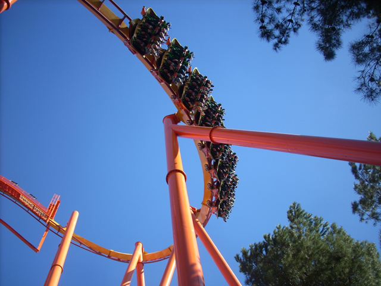
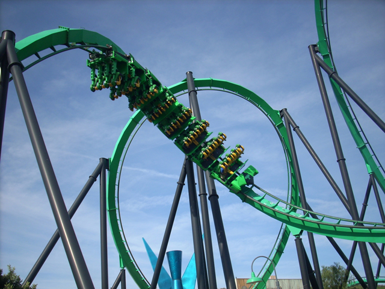
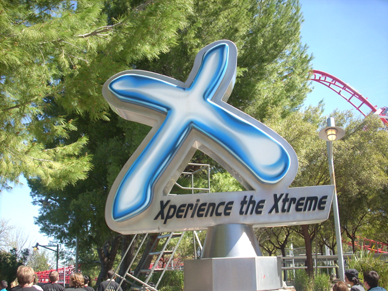
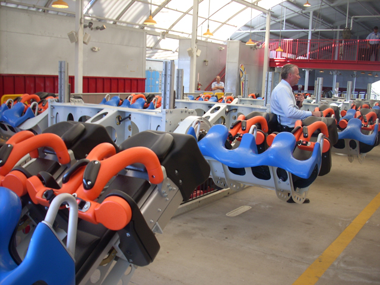
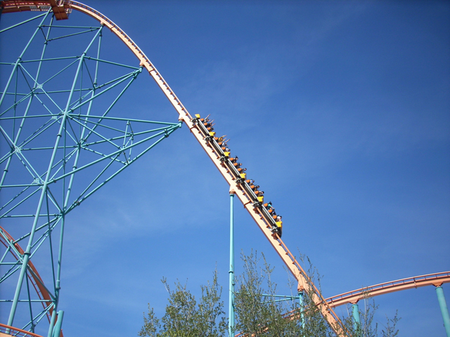
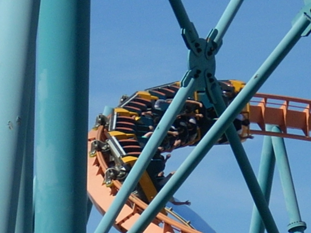
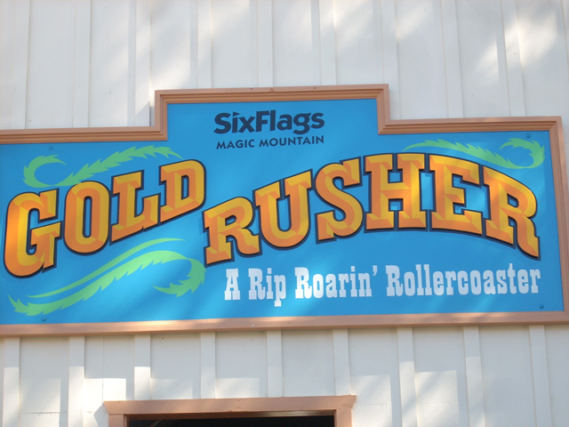
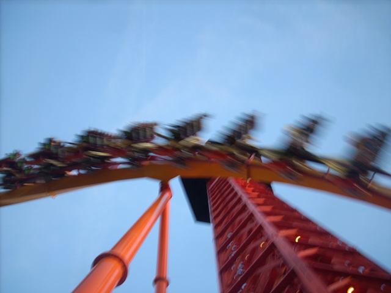

Westcoast Bash 2008
So here we are for Westcoast Bash again. And while last years X marathon was awsome, all the stuff they put into this year knocked the s**t out of it! So here we are.

There was Morning ERT on Revolution, Viper, Superman, and Tatsu.
But who needs ERT when there are Doughnuts to be eaten!!!!!
Unless Magic Mountain gets the Xbox Hut, William will be humping this Tatsu support all day long.
 After the Morning ERT, we went straight on down to Riddlers Revenge.
After the Morning ERT, we went straight on down to Riddlers Revenge.

Riddlers was running good as usual.
 In a ghetto attempt to copy Disney, Six Flags has intoduced "Rockin Scream!!!"
In a ghetto attempt to copy Disney, Six Flags has intoduced "Rockin Scream!!!"

Do NOT listen to the sign!!!! The sign feeds you lies!!!!!

Roll out the red carpet for X2's new trains.
Tim giving us a talk about X2.
I see a yellow support and I want to paint it black!!!
 And here's Thomas Town. I can already see their first attraction came straight from Diggerland.
And here's Thomas Town. I can already see their first attraction came straight from Diggerland.

But who needs Thomas Town when there are badass Goliath shots to be taken!
 There's more airtime on Canyon Blaster.
There's more airtime on Canyon Blaster.

This shot would have looked alot better if it wern't for those damn supports in the way.

I was just walking from one of the tours when I noticed that Golrdusher got a new sign. It looks nice.
 And in this tour, we saw various things from SFMM and other Six Flags Parks like this Shockwave Train.
And in this tour, we saw various things from SFMM and other Six Flags Parks like this Shockwave Train.
I'm still waiting for that 2nd Generation Freefall.
 So sad to see Granny Grand Prix gone. And to think of all the missed oppertunities to ride this magnificent car ride.
So sad to see Granny Grand Prix gone. And to think of all the missed oppertunities to ride this magnificent car ride.
Seeing Disected Flashback is just plain awsome in 100 diffrent ways.
The XLR8 trains have returned!!!!
The only suspended that could have been crappier than Iron Dragon.
Why was the Collosus train here? Collosus is still here.
Cheese the Ride!!! (This will probably be the name of the 2009 B&M Hyper @ Kings Island.)
Once again, so sad to see it's gone.
And here's a car from Grand Prix.
 Unfortunetly, DejaVu is sick and not able to toss around a bunch of nuts like us.
Unfortunetly, DejaVu is sick and not able to toss around a bunch of nuts like us.

And the last tour of the night is the Sky Tower Tour.
Here's a *tiny* fragment of what you'll find in the Sky Tower museum.
And here's a picture of the fountains before we got Night Time ERT with all the coasters open!!!
Home